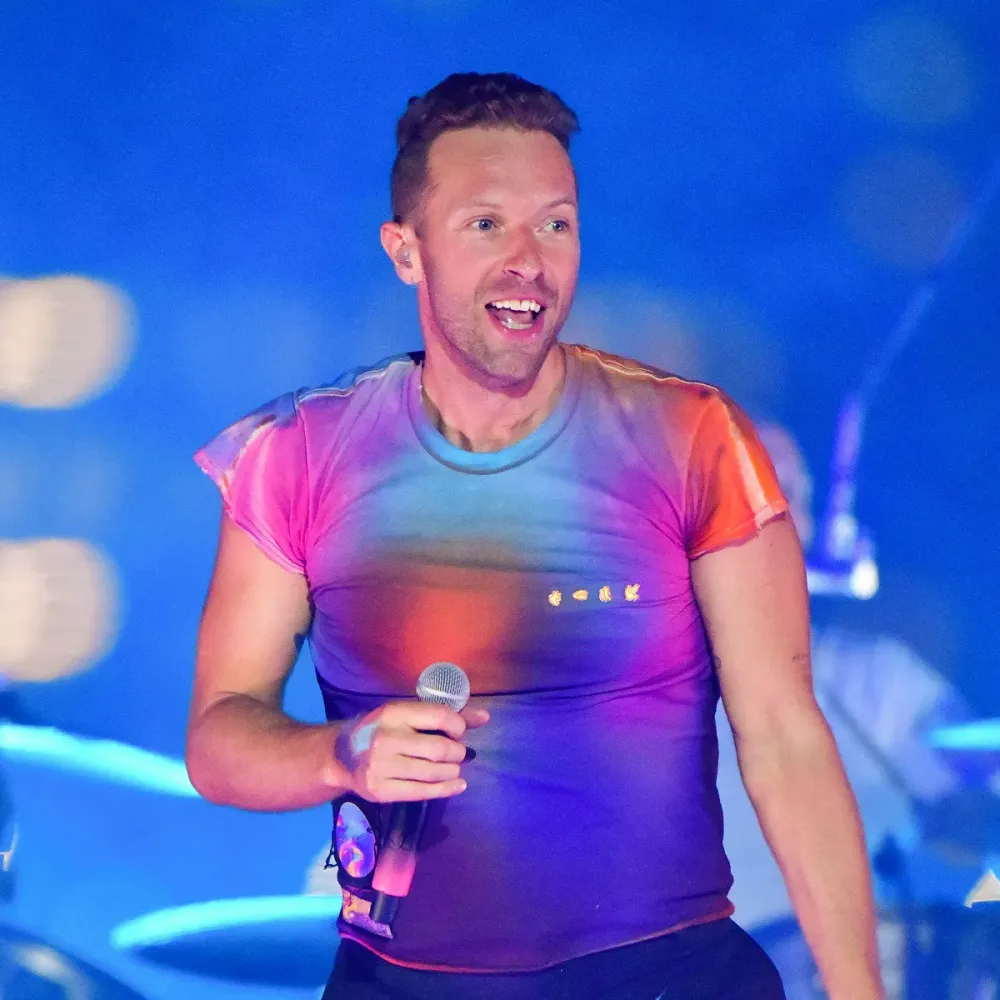
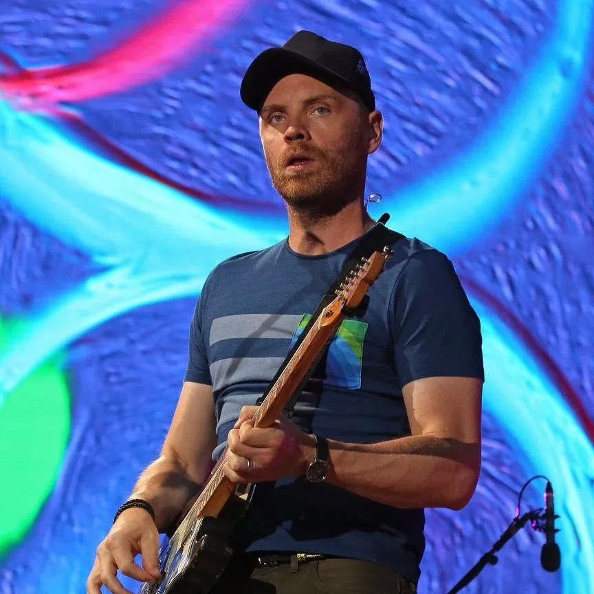
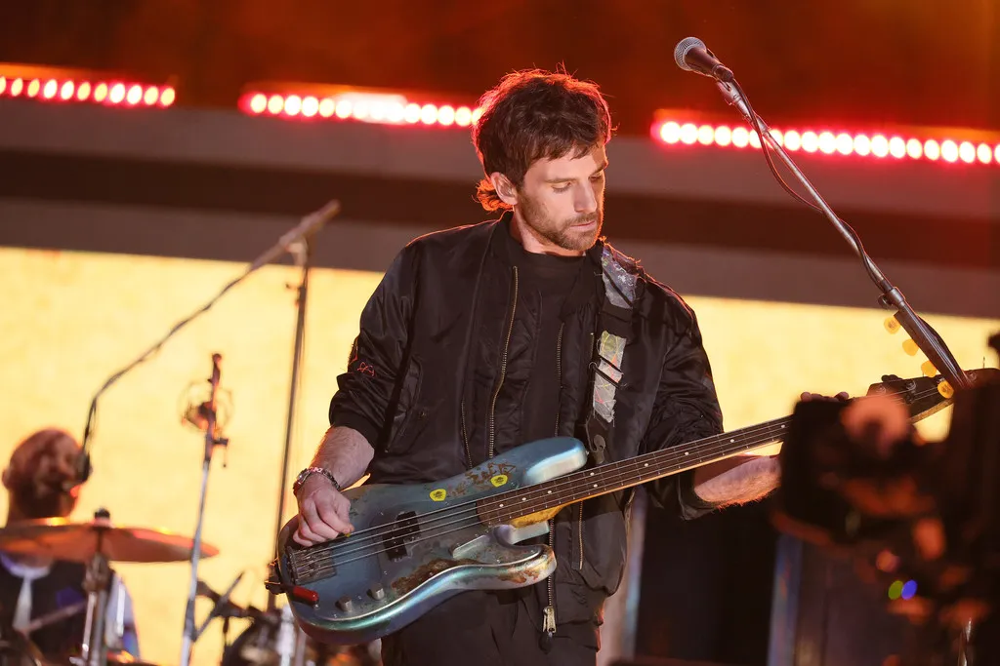
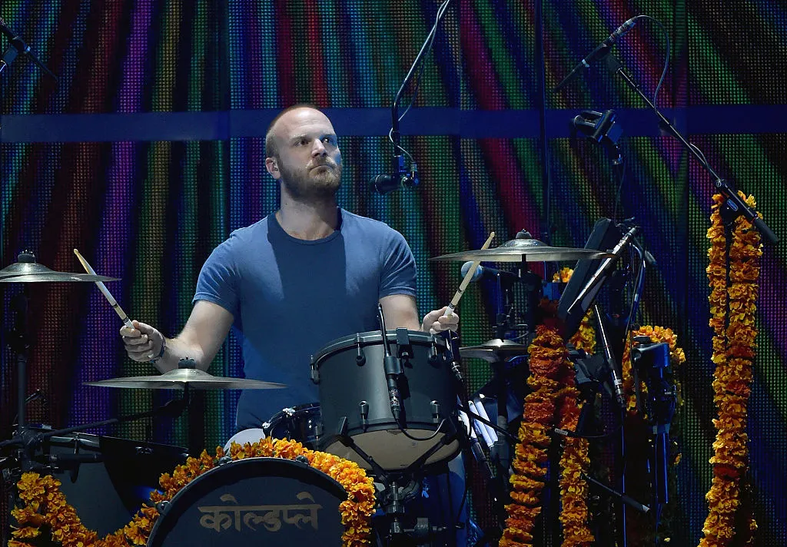

Member Chris Martin  크리스 마틴" 영국의 얼터너티브 록 그룹인 콜드플레이의 리더이자 프론트맨 " 콜드플레이에서는 리드 보컬이고, 곡에 따라서 피아노, 어쿠스틱 기타, 키보드, 바이올린,막춤 등을 맡고 있으며 종종 하모니카도 연주한다. 갈라지는 듯한 고음, 따뜻하면서도 공허한 음색의 독특한 보컬이 특징. 콜드플레이의 곡들은 고음이 비중이 크진 않으며 그마저도 대부분 가성으로 처리하지만 가성과 진성을 오가는 게 매끄럽고 자연스럽다. Jonny Buckland  조니 버클랜드 " 영국의 얼터너티브 록그룹인 콜드플레이의 리드 기타리스트 " 11살 때 U2와 조지 해리슨을 보고 감명받아 처음 기타를 시작했다고 한다. 천문학과 수학을 위해 유니버시티 칼리지 런던으로 갔다가 당시 크리스마틴과 만나 결성한 밴드가 바로 콜드플레이였다. 본인 스스로도 인정하듯 연주실력 자체가 훌륭한 케이스는 아니다. 본인 곡은 아니지만 오아시스의 Don't Look Back In Anger을 2번정도 커버했는데 두번 다 실수를 하기도 하였다(...) 하지만 특유의 톤이 매우 멋진 기타리스트이기 때문에 콜드플레이의 음악에 개성을 살려준다는 점에서 훌륭한 기타리스트라고 할 수 있다. 이러한 톤은 앞서 서술했듯 U2의 영향을 크게 받은 것으로 보이며 동시에 후배 기타리스트에게 영향을 주기도 하였다. Guy Berryman  가이 베리먼 " 콜드플레이의 베이시스트 " 영국 스코틀랜드 출신이다.UCL 대학교에서 밴드를 결성하기로 한 크리스 마틴과 조니 버클랜드와 친한 사이로 들어오게 되었으며 멤버들 중에서는 3번째로 들어왔다. 콘서트에서 가장 차분한 표정을 짓고 있는 인물이다. 기타리스트인 조니와 마찬가지로 베이스를 연주할때 특유의 포즈가 있다. Will Champion  윌 챔피언 " 콜드플레이의 드러머 + 주요 코러스 담당 " 본래는 드럼을 다루지 않았으나 UCL에서 만난 크리스 마틴, 가이 베리먼, 조니 버클랜드과 함께 콜드플레이 멤버로 활동하기 시작하면서 부터 드러머 포지션을 맡게 되었다. 그전까지 다양한 악기를 다뤄온 덕에 처음 다루는 드럼도 어렵지 않게 익힐 수 있었다고. 하지만 전문적으로 드럼을 배워온 멤버는 아니였기 때문에 활동 초기에는 실력적인 부분에서 문제가 있었고, 음반 관계자들이 윌 챔피언에 대하여 안 좋은 인식이 박히게 되자 콜드플레이에서 방출당하기도 하였으며 콜드플레이는 새로운 드러머를 뽑기 위해 오디션까지 열기도 하였다. 그러나 곧 콜드플레이 멤버들이 생각을 바꿔 다시 윌 챔피언을 영입하였다. 드럼 이외에도 다양한 악기를 다룬다. 장르가 확장되기 시작한 4집 부터 더욱 그러한 모습을 많이 보여주고 있는데 기타, 키보드는 물론 Reactable 같은 특이한 악기들도 다룬다. 그리고 주요 코러스를 담당하는 멤버이자 크리스 대신 리드보컬을 맡기까지도 하는 멤버이기도 한데 가끔 노래를 버겁게 부르기는 하지만(...) 음색이 고운편이다. Viva la Vida 같은 곡에서는 힘찬 목소리를 보여주기도 한다.